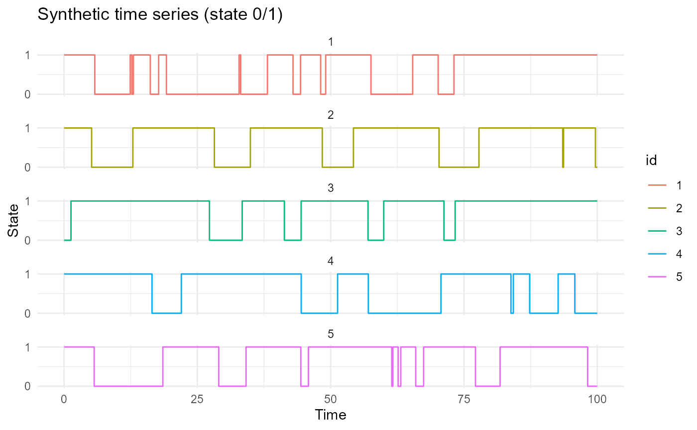
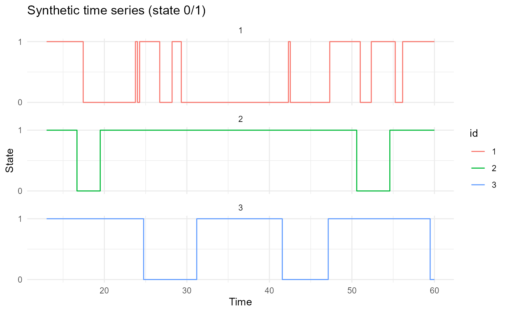
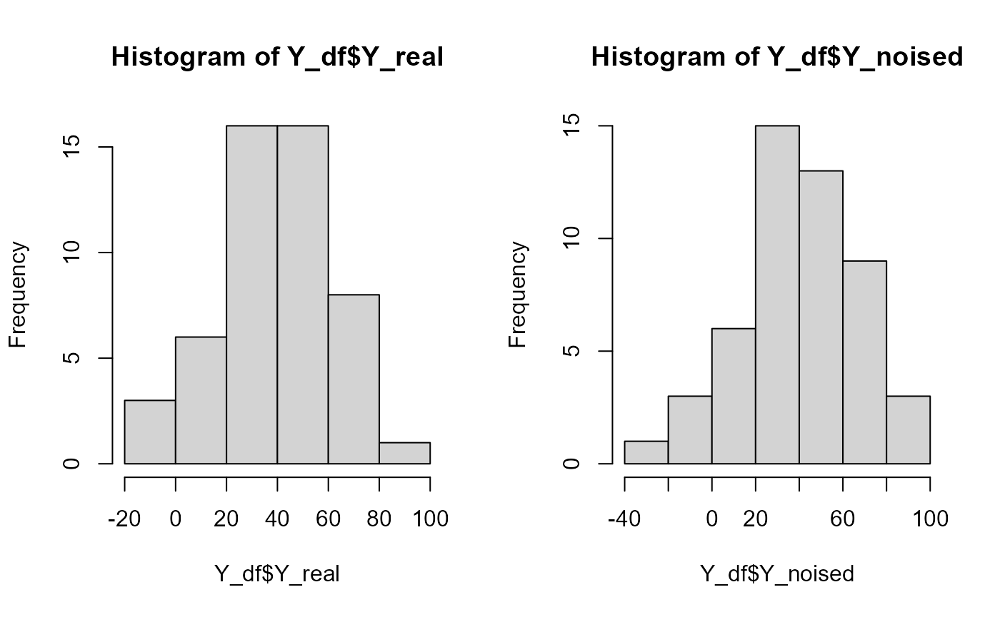
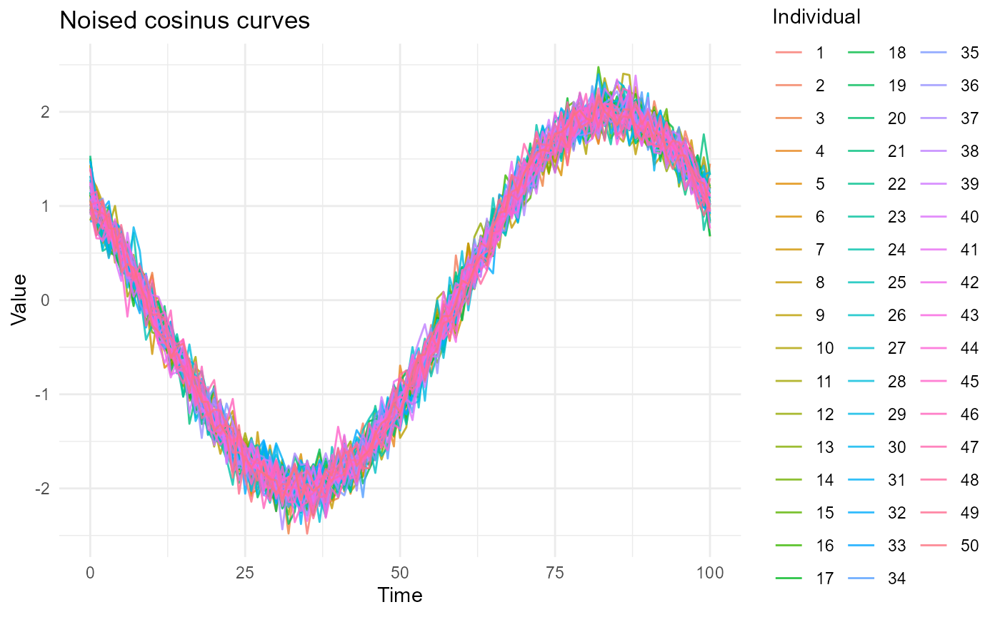
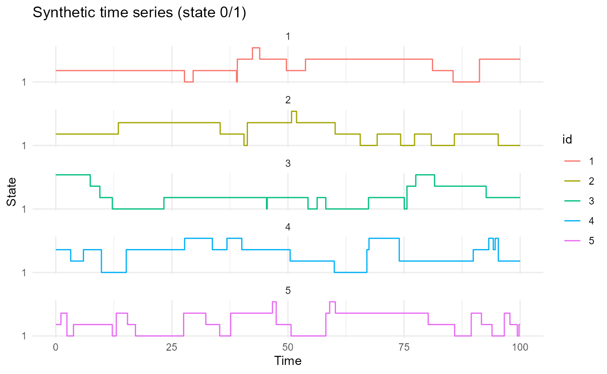
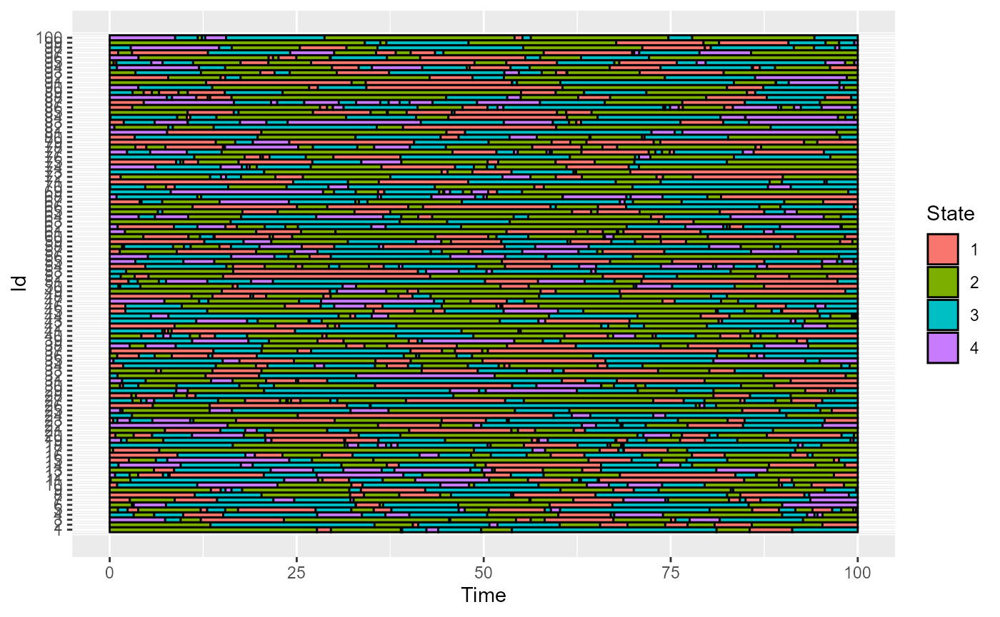
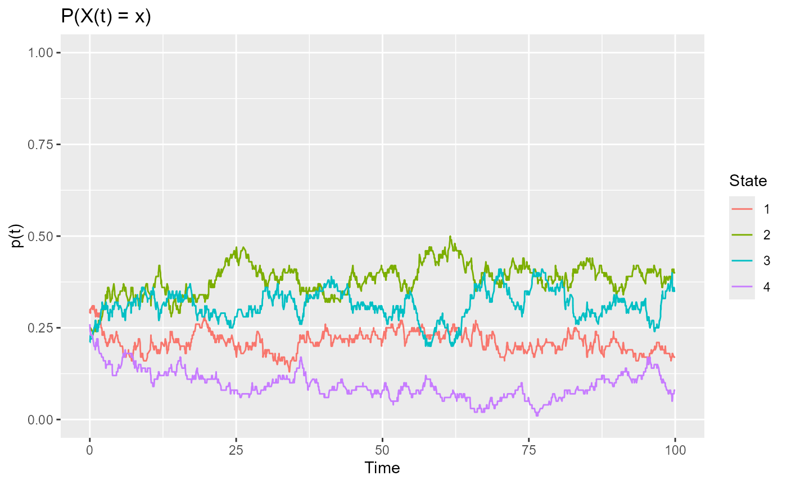
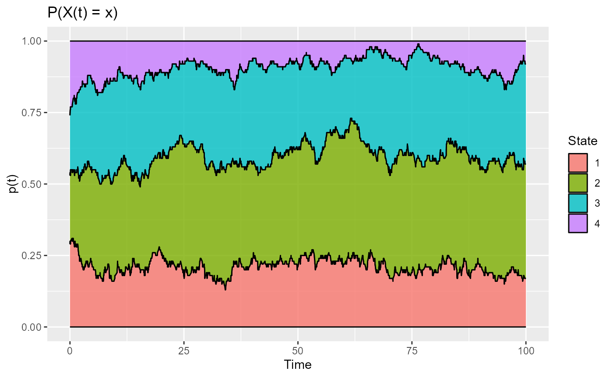
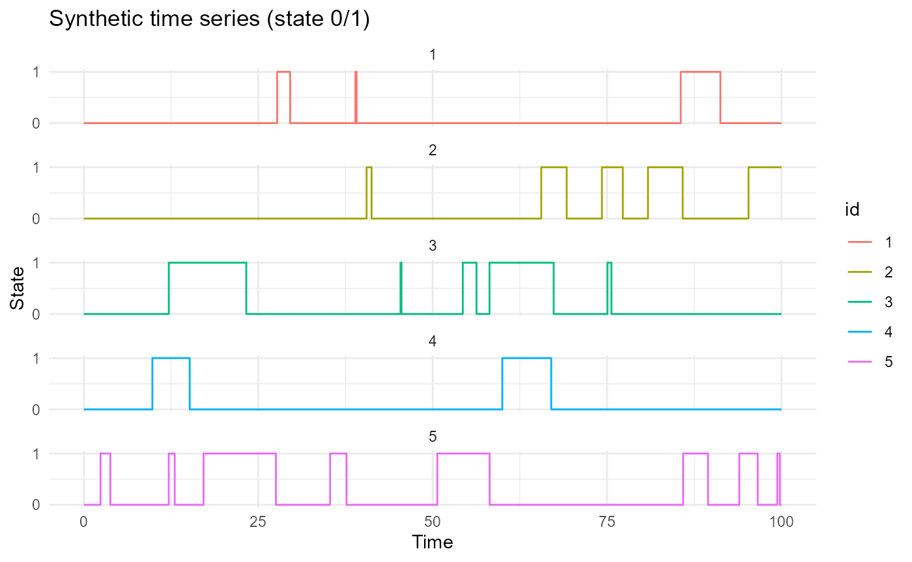

library(SmoothPLS)
#> Warning: replacing previous import 'fda::matplot' by 'graphics::matplot' when
#> loading 'SmoothPLS'
#> Warning: replacing previous import 'pls::loadings' by 'stats::loadings' when
#> loading 'SmoothPLS'
#> Warning: replacing previous import 'dplyr::lag' by 'stats::lag' when loading
#> 'SmoothPLS'
#> Warning: replacing previous import 'dplyr::filter' by 'stats::filter' when
#> loading 'SmoothPLS'
library(ggplot2)
#> Warning: package 'ggplot2' was built under R version 4.4.3
library(dplyr)
#>
#> Attaching package: 'dplyr'
#> The following objects are masked from 'package:stats':
#>
#> filter, lag
#> The following objects are masked from 'package:base':
#>
#> intersect, setdiff, setequal, unionThis document show some examples of some of the package’s functions. It is divided by parts dedicated to some subjects.
Parameters
We will encounter some parameters in this package. Here we will fix them.
nind = 50 # number of individuals (train set)
start = 0 # First time
end = 100 # end time
lambda_0 = 0.2 # Exponential law parameter for state 0
lambda_1 = 0.1 # Exponential law parameter for state 1
prob_start = 0.55 # Probability of starting with state 1
curve_type = 'cat'
TTRatio = 0.2 # Train Test Ratio
NotS_ratio = 0.2 # noise variance over total variance for Y
beta_0_real = 5.4321 # Intercept value for the link between X(t) and Y
nbasis = 15 # number of basis functions
norder = 4 # 4 for cubic splines basisIntegral evaluation
evaluate_id_func_integral
This function evaluate the following integral : . With a categorical functional data which states are 0 or 1. WARNING this function as no use if is a Scalar Functional Data.
id_df = data.frame(id=rep(1,5), time=seq(0, 40, 10), state=c(0, 1, 1, 0, 1))
id_df
#> id time state
#> 1 1 0 0
#> 2 1 10 1
#> 3 1 20 1
#> 4 1 30 0
#> 5 1 40 1
func = function(t){0.01*t^2 - t}
plot(0:40, func(0:40))
evaluate_id_func_integral(id_df, func)
#> id integral
#> 1 1 -313.3333Data regularisation
regularize_time_series
This function regularize a dataframe on another time sequence. If the input dataframe get more than one id, all the ids will share the same time sequence in the output dataframe.
id_df_regul = regularize_time_series(id_df, time_seq = seq(0, 40, 2),
curve_type = 'cat')
id_df_regul
#> id time state
#> 1 1 0 0
#> 2 1 2 0
#> 3 1 4 0
#> 4 1 6 0
#> 5 1 8 0
#> 6 1 10 1
#> 7 1 12 1
#> 8 1 14 1
#> 9 1 16 1
#> 10 1 18 1
#> 11 1 20 1
#> 12 1 22 1
#> 13 1 24 1
#> 14 1 26 1
#> 15 1 28 1
#> 16 1 30 0
#> 17 1 32 0
#> 18 1 34 0
#> 19 1 36 0
#> 20 1 38 0
#> 21 1 40 1convert_to_wide_format
This function converts a regularized dataframe into a long format by pivoting the data. Useful for classic Multivariate Functional PLS or else. The input dataframe of convert_to_wide_format is the output of the function regularize_time_series because after the regularisation, all the individuals have the same time interval and time sampling which allows the pivot table.
id_df_long = convert_to_wide_format(id_df_regul)
id_df_long
#> # A tibble: 1 × 22
#> id t0 t2 t4 t6 t8 t10 t12 t14 t16 t18 t20 t22
#> <dbl> <dbl> <dbl> <dbl> <dbl> <dbl> <dbl> <dbl> <dbl> <dbl> <dbl> <dbl> <dbl>
#> 1 1 0 0 0 0 0 1 1 1 1 1 1 1
#> # ℹ 9 more variables: t24 <dbl>, t26 <dbl>, t28 <dbl>, t30 <dbl>, t32 <dbl>,
#> # t34 <dbl>, t36 <dbl>, t38 <dbl>, t40 <dbl>Other
from_fd_to_func
This function transform an fd object into a function. This function will be used to easier the integral calculation inside the PLS.
basis = create_bspline_basis(0, 100, 10, 4)
coef = c(10, 8, 6, 4, 2, 1, 3, 5, 7, 9)
fd_obj = fda::fd(coef = coef, basisobj = basis)
func_from_fd = from_fd_to_func(coef = coef, basis = basis)Here if the fd object :
plot(fd_obj)#> [1] "done"Now we can evaluate, we should find the same values :
fda::eval.fd(fd_obj, 13)
#> reps 1
#> [1,] 6.396324Synthetic one state CFD data
This package provides some function to create some synthetic data. These data are individuals with state 0 or 1. The state law are exponential laws.
One important input is : type = ‘cat’.
generate_X_df
This function generate nind individuals, for a time between start and end, with parameters for the two exponential law for state 0 and state 1 lambda_0 and lambda_1. The first state at time = start as the probability prob_start of being 1 (binomial law).
Here we generate df with the declared parameters at the top of this notebook.
df = generate_X_df(nind = nind, start = start,end = end, curve_type = 'cat',
lambda_0 = lambda_0, lambda_1 = lambda_1,
prob_start = prob_start)
head(df)
#> id time state
#> 1 1 0.000000 1
#> 2 1 5.766103 0
#> 3 1 12.411377 1
#> 4 1 12.727151 0
#> 5 1 13.008206 1
#> 6 1 16.173218 0
df_2 = generate_X_df(nind=20, start = 13, end = 60, curve_type = 'cat',
lambda_0 = 0.21, lambda_1 = 0.13, prob_start = 0.55)
length(unique(df_2$id))
#> [1] 20plot_individuals
This function plots the selected first individuals of the given dataframe.

plot_CFD_individuals(df_2, n_ind_to_plot = 3)
Create df test
this function generates the test set of X. It uses the same arguments than the previous function generate_X_df plus the train test ration TTRatio. It evaluates the number of individuals to create in order to follow the TTRatio for all the individuals, Train set and test set.
nind_test = number_of_test_id(TTRatio = TTRatio, nind = nind)
df_test = generate_X_df(nind_test, start, end, curve_type = 'cat',
lambda_0, lambda_1, prob_start)
length(unique(df_test$id))
#> [1] 12
df_test_2 = generate_X_df(nind=number_of_test_id(TTRatio = TTRatio, nind = 80),
start, end, curve_type = 'cat',
lambda_0, lambda_1, prob_start)
# Here the number of individuals will be 20 because :
# 20 = 0.2 (80 + 20) or
# 20 = floor(80*TTRatio/(1-TTRatio))
length(unique(df_test_2$id))
#> [1] 20Beta_real
This package gives 3 functions to link with a scalar by the following equation : .
beta_1_real_func
plot(x=0:100, y=beta_1_real_func(0:100, 100), type='l', main="Beta_1")beta_2_real_func
plot(x=0:100, y=beta_2_real_func(0:100, 100), type='l', main="Beta_2")beta_3_real_func
plot(x=0:100, y=beta_3_real_func(0:100, 100), type='l', main="Beta_3")Other beta functions
plot(x=0:100, y=beta_4_real_func(0:100, 100), type='l', main="Beta_4")
plot(x=0:100, y=beta_5_real_func(0:100, 100), type='l', main="Beta_5")
plot(x=0:100, y=beta_6_real_func(0:100, 100), type='l', main="Beta_6")
plot(x=0:100, y=beta_7_real_func(0:100, 100), type='l', main="Beta_7")generate_Y_df
This function generates a Y dataframe base on the following relation between and : . It also add some noise to Y. The given ration NotS_ratio gives the part of the total variance due to some gaussian noise.
Y_df = generate_Y_df(df, curve_type = 'cat',
beta_1_real_func, beta_0_real, NotS_ratio)
names(Y_df)
#> [1] "id" "Y_real" "Y_noised"
head(Y_df)
#> id Y_real Y_noised
#> 1 1 70.03711 63.43979
#> 2 2 48.59410 45.88469
#> 3 3 59.85310 78.20055
#> 4 4 24.01073 24.84068
#> 5 5 56.93758 58.45942
#> 6 6 61.43766 81.62557We can look at the variance :
var(Y_df$Y_real)
#> [1] 554.2192
var(Y_df$Y_noised)
#> [1] 739.6589
var(Y_df$Y_real)/var(Y_df$Y_noised)
#> [1] 0.7492903
(var(Y_df$Y_noised) - var(Y_df$Y_real))/var(Y_df$Y_noised)
#> [1] 0.2507097
We can generate Y_df_test the same way by simply changing df to df_test:
Y_df_test = generate_Y_df(df_test, curve_type = 'cat',
beta_1_real_func, beta_0_real,
NotS_ratio)
head(Y_df_test)
#> id Y_real Y_noised
#> 1 1 70.03711 66.10489
#> 2 2 48.59410 46.97920
#> 3 3 59.85310 70.78879
#> 4 4 24.01073 24.50541
#> 5 5 56.93758 57.84465
#> 6 6 61.43766 73.47033Synthetic SFD data
We can also generate synthetic Scalar Functional Data SFD. The important input is type=‘num’.
generate_X_df
For SFD for X_df two new arguments are important: the noise added to the signal and the seed for repeatability.
df = generate_X_df(nind = nind, start = start,end = end, curve_type = 'num',
noise_sd = 0.15, seed = 123)
head(df)
#> id time value
#> 1 1 0 1.2591356
#> 2 1 1 0.7193661
#> 3 1 2 1.0470795
#> 4 1 3 0.7297674
#> 5 1 4 0.6105385
#> 6 1 5 0.5351208
# Visualisation
ggplot(df, aes(x = time, y = value, group = id, color = factor(id))) +
geom_line(alpha = 0.8) +
labs(title = "Noised cosinus curves",
x = "Time", y = "Value",
color = "Individual") +
theme_minimal()
generate_Y_df
Y_df = generate_Y_df(df = df, curve_type = 'num',
beta_real_func_or_list = beta_1_real_func,
beta_0_real = beta_0_real, NotS_ratio = NotS_ratio,
seed = 123)
head(Y_df)
#> id Y_real Y_noised
#> 1 1 211.9966 211.4010
#> 2 2 214.7040 214.4594
#> 3 3 213.1712 214.8276
#> 4 4 210.1414 210.2163
#> 5 5 208.3050 208.4424
#> 6 6 208.4381 210.2606regularize_time_series
id_df_regul = regularize_time_series(df, time_seq = seq(0, 40, 2),
curve_type = 'num')
id_df_regul
#> id time value
#> 1 1 0 1.2591356058
#> 2 1 2 1.0470795456
#> 3 1 4 0.6105384880
#> 4 1 6 0.5772717305
#> 5 1 8 0.3897052156
#> 6 1 10 0.2642695075
#> 7 1 12 -0.3285942560
#> 8 1 14 -0.4137112833
#> 9 1 16 -0.8502908980
#> 10 1 18 -1.1726978392
#> 11 1 20 -1.3168846512
#> 12 1 22 -1.4634608174
#> 13 1 24 -1.6335783757
#> 14 1 26 -1.8702501514
#> 15 1 28 -1.9036260161
#> 16 1 30 -2.0244393652
#> 17 1 32 -1.8498600658
#> 18 1 34 -1.9505031276
#> 19 1 36 -2.1013011431
#> 20 1 38 -2.1228567127
#> 21 1 40 -1.7434094354
#> 22 2 0 0.9378618266
#> 23 2 2 0.7434194922
#> 24 2 4 0.5710908042
#> 25 2 6 0.2988864544
#> 26 2 8 -0.1065048437
#> 27 2 10 -0.0370698945
#> 28 2 12 -0.3484747650
#> 29 2 14 -0.7353814234
#> 30 2 16 -0.8242910066
#> 31 2 18 -1.1362559723
#> 32 2 20 -0.9900684367
#> 33 2 22 -1.4153393419
#> 34 2 24 -1.7560478382
#> 35 2 26 -1.5307901643
#> 36 2 28 -1.8494326149
#> 37 2 30 -2.2424851992
#> 38 2 32 -2.2019664985
#> 39 2 34 -1.7136062723
#> 40 2 36 -1.8802647271
#> 41 2 38 -2.1756015392
#> 42 2 40 -2.1036663913
#> 43 3 0 1.0798334185
#> 44 3 2 0.7917233066
#> 45 3 4 0.6835971888
#> 46 3 6 0.4334818825
#> 47 3 8 0.2999560291
#> 48 3 10 0.2912442676
#> 49 3 12 -0.3692027318
#> 50 3 14 -0.5761542822
#> 51 3 16 -0.7595543941
#> 52 3 18 -0.9953022656
#> 53 3 20 -1.5021680660
#> 54 3 22 -1.3506431684
#> 55 3 24 -1.6358876156
#> 56 3 26 -1.8390420419
#> 57 3 28 -1.7237129323
#> 58 3 30 -1.8305280202
#> 59 3 32 -2.4794722969
#> 60 3 34 -1.8660989277
#> 61 3 36 -2.1649851394
#> 62 3 38 -1.7940243789
#> 63 3 40 -1.7840912242
#> 64 4 0 1.3862407145
#> 65 4 2 0.9746713772
#> 66 4 4 0.5378987760
#> 67 4 6 0.4907170842
#> 68 4 8 -0.0526197316
#> 69 4 10 0.0217277187
#> 70 4 12 -0.1816099026
#> 71 4 14 -0.5088027268
#> 72 4 16 -0.7393761679
#> 73 4 18 -0.9677282488
#> 74 4 20 -1.2655542240
#> 75 4 22 -1.6289124330
#> 76 4 24 -1.3838866864
#> 77 4 26 -2.0553062161
#> 78 4 28 -1.8857347055
#> 79 4 30 -1.9497806043
#> 80 4 32 -1.8390196812
#> 81 4 34 -1.9915692977
#> 82 4 36 -2.2485179812
#> 83 4 38 -2.0255574240
#> 84 4 40 -1.8904219000
#> 85 5 0 1.4356594782
#> 86 5 2 0.6194322814
#> 87 5 4 0.7398972830
#> 88 5 6 0.4124369274
#> 89 5 8 -0.0584388402
#> 90 5 10 -0.2912823356
#> 91 5 12 -0.7180680445
#> 92 5 14 -0.5176320984
#> 93 5 16 -0.8660876258
#> 94 5 18 -0.8794712397
#> 95 5 20 -1.2784589448
#> 96 5 22 -1.6312787821
#> 97 5 24 -1.7550310860
#> 98 5 26 -1.6800101500
#> 99 5 28 -1.8051039179
#> 100 5 30 -2.0908706871
#> 101 5 32 -2.0625145614
#> 102 5 34 -1.8956366850
#> 103 5 36 -1.8799886424
#> 104 5 38 -1.8146567911
#> 105 5 40 -1.8317834667
#> 106 6 0 0.9881392353
#> 107 6 2 0.8413847437
#> 108 6 4 0.4721727293
#> 109 6 6 0.5302785878
#> 110 6 8 0.0314144624
#> 111 6 10 0.0522163067
#> 112 6 12 -0.1788248241
#> 113 6 14 -0.5463845070
#> 114 6 16 -0.7511323959
#> 115 6 18 -1.2757571815
#> 116 6 20 -0.9747700549
#> 117 6 22 -1.2758593193
#> 118 6 24 -1.7030529198
#> 119 6 26 -1.7884600091
#> 120 6 28 -1.7499924606
#> 121 6 30 -1.8045431962
#> 122 6 32 -2.1626638417
#> 123 6 34 -1.6354378098
#> 124 6 36 -1.8587967412
#> 125 6 38 -1.7731732026
#> 126 6 40 -1.6156486566
#> 127 7 0 1.1142373544
#> 128 7 2 0.9414393267
#> 129 7 4 0.5587006907
#> 130 7 6 0.2974429359
#> 131 7 8 0.2267813064
#> 132 7 10 -0.5720259605
#> 133 7 12 -0.4680774622
#> 134 7 14 -0.5640876072
#> 135 7 16 -1.0683921560
#> 136 7 18 -0.7741183066
#> 137 7 20 -1.2416482794
#> 138 7 22 -1.4035909012
#> 139 7 24 -1.4545044130
#> 140 7 26 -1.8367329910
#> 141 7 28 -1.8499892394
#> 142 7 30 -1.7802454338
#> 143 7 32 -1.8893790242
#> 144 7 34 -2.0051889404
#> 145 7 36 -1.9647435458
#> 146 7 38 -2.1323362365
#> 147 7 40 -1.9708957715
#> 148 8 0 1.1410981614
#> 149 8 2 0.6019094854
#> 150 8 4 0.3987282026
#> 151 8 6 0.4227256720
#> 152 8 8 0.1645914982
#> 153 8 10 0.0329739039
#> 154 8 12 -0.2321493728
#> 155 8 14 -0.3979893436
#> 156 8 16 -0.7632008543
#> 157 8 18 -1.0771752668
#> 158 8 20 -1.1137741771
#> 159 8 22 -1.3021079909
#> 160 8 24 -1.5121069635
#> 161 8 26 -2.0790677596
#> 162 8 28 -1.9280190764
#> 163 8 30 -1.8783015808
#> 164 8 32 -1.9993270361
#> 165 8 34 -1.9678781107
#> 166 8 36 -2.0035914511
#> 167 8 38 -1.9699986374
#> 168 8 40 -1.8928193526
#> 169 9 0 1.3185827460
#> 170 9 2 1.0334221485
#> 171 9 4 0.7165430739
#> 172 9 6 0.3932556888
#> 173 9 8 0.2541603805
#> 174 9 10 -0.0603813954
#> 175 9 12 -0.4060219772
#> 176 9 14 -0.5857318073
#> 177 9 16 -0.7815001996
#> 178 9 18 -1.1479262340
#> 179 9 20 -1.3330837729
#> 180 9 22 -1.4138837146
#> 181 9 24 -1.8192634658
#> 182 9 26 -1.5965026428
#> 183 9 28 -1.9885465407
#> 184 9 30 -1.7063035995
#> 185 9 32 -1.9468733539
#> 186 9 34 -2.2286288900
#> 187 9 36 -1.7449607139
#> 188 9 38 -2.1239175066
#> 189 9 40 -1.9361720048
#> 190 10 0 1.1803785931
#> 191 10 2 0.8468320241
#> 192 10 4 1.0013244638
#> 193 10 6 0.4135014652
#> 194 10 8 0.1366059697
#> 195 10 10 -0.1166378496
#> 196 10 12 -0.4673485420
#> 197 10 14 -0.6401014488
#> 198 10 16 -0.6845750022
#> 199 10 18 -1.3155598240
#> 200 10 20 -1.3353118175
#> 201 10 22 -1.5500384191
#> 202 10 24 -1.6526094733
#> 203 10 26 -1.7686620566
#> 204 10 28 -1.8321941971
#> 205 10 30 -1.8811599742
#> 206 10 32 -1.9497637942
#> 207 10 34 -2.2131380748
#> 208 10 36 -1.8679067455
#> 209 10 38 -1.9162744672
#> 210 10 40 -1.8489480902
#> 211 11 0 0.9331176832
#> 212 11 2 0.9790427071
#> 213 11 4 0.7844295240
#> 214 11 6 0.0377999710
#> 215 11 8 0.3617221425
#> 216 11 10 -0.1528723330
#> 217 11 12 -0.4044646727
#> 218 11 14 -0.5306261473
#> 219 11 16 -0.7873160845
#> 220 11 18 -1.1347969452
#> 221 11 20 -1.5559733957
#> 222 11 22 -1.4825437982
#> 223 11 24 -1.6681873661
#> 224 11 26 -1.6607301568
#> 225 11 28 -1.7079685605
#> 226 11 30 -1.9366976400
#> 227 11 32 -2.2781079422
#> 228 11 34 -1.9372450525
#> 229 11 36 -2.2806345791
#> 230 11 38 -1.7169544029
#> 231 11 40 -2.0190805275
#> 232 12 0 0.8453409186
#> 233 12 2 0.8467306825
#> 234 12 4 0.4807691868
#> 235 12 6 0.2811762993
#> 236 12 8 0.3310350576
#> 237 12 10 -0.1385147681
#> 238 12 12 -0.4136820187
#> 239 12 14 -0.5933901364
#> 240 12 16 -0.9539398374
#> 241 12 18 -0.8831107062
#> 242 12 20 -1.2211908832
#> 243 12 22 -1.5943247366
#> 244 12 24 -1.5858036121
#> 245 12 26 -1.7298538554
#> 246 12 28 -1.8138733162
#> 247 12 30 -2.0598822240
#> 248 12 32 -2.0328386231
#> 249 12 34 -2.0172550641
#> 250 12 36 -2.2883356762
#> 251 12 38 -1.8255339892
#> 252 12 40 -1.6410755575
#> 253 13 0 0.9539185183
#> 254 13 2 0.6682354156
#> 255 13 4 0.4870681951
#> 256 13 6 0.3831386231
#> 257 13 8 0.0661497495
#> 258 13 10 -0.2140366901
#> 259 13 12 -0.3160981984
#> 260 13 14 -0.7033404149
#> 261 13 16 -0.6900601089
#> 262 13 18 -1.2235350384
#> 263 13 20 -1.3390164223
#> 264 13 22 -1.3318701952
#> 265 13 24 -1.7038643098
#> 266 13 26 -1.6988353660
#> 267 13 28 -1.9215604644
#> 268 13 30 -2.0724620767
#> 269 13 32 -2.1961272723
#> 270 13 34 -1.9813362745
#> 271 13 36 -2.1848787658
#> 272 13 38 -1.7462127925
#> 273 13 40 -1.7577302843
#> 274 14 0 1.0637206790
#> 275 14 2 0.9867996528
#> 276 14 4 0.5968392579
#> 277 14 6 0.3523994262
#> 278 14 8 0.0488685749
#> 279 14 10 -0.3429290744
#> 280 14 12 -0.5392539002
#> 281 14 14 -0.7373764084
#> 282 14 16 -0.8639021194
#> 283 14 18 -1.1812635237
#> 284 14 20 -1.1311863246
#> 285 14 22 -1.4511843740
#> 286 14 24 -1.7270318971
#> 287 14 26 -1.4624523428
#> 288 14 28 -1.6845595294
#> 289 14 30 -2.1097118593
#> 290 14 32 -1.7870812574
#> 291 14 34 -1.9304023865
#> 292 14 36 -2.0592431724
#> 293 14 38 -1.7454660467
#> 294 14 40 -2.0042703533
#> 295 15 0 0.9242134979
#> 296 15 2 0.7677176004
#> 297 15 4 0.7044010432
#> 298 15 6 0.5948757826
#> 299 15 8 0.2934112221
#> 300 15 10 -0.2577505234
#> 301 15 12 -0.3041902078
#> 302 15 14 -0.5851766102
#> 303 15 16 -0.7924700195
#> 304 15 18 -0.9699806221
#> 305 15 20 -1.3428963474
#> 306 15 22 -1.3644906680
#> 307 15 24 -1.5745129548
#> 308 15 26 -1.9465366346
#> 309 15 28 -1.7906993642
#> 310 15 30 -2.1321959463
#> 311 15 32 -2.0275037775
#> 312 15 34 -1.8363751162
#> 313 15 36 -1.7576388893
#> 314 15 38 -1.9516658315
#> 315 15 40 -1.9919063419
#> 316 16 0 1.1899962569
#> 317 16 2 0.9030292852
#> 318 16 4 0.8373242521
#> 319 16 6 0.6218662956
#> 320 16 8 0.2282660072
#> 321 16 10 -0.1318397693
#> 322 16 12 -0.4780780068
#> 323 16 14 -0.4657018761
#> 324 16 16 -1.0367477954
#> 325 16 18 -1.2295541538
#> 326 16 20 -1.1878358703
#> 327 16 22 -1.3016253305
#> 328 16 24 -1.5313469967
#> 329 16 26 -1.9201559933
#> 330 16 28 -1.8199068294
#> 331 16 30 -1.9241128170
#> 332 16 32 -2.0875954831
#> 333 16 34 -2.0929140656
#> 334 16 36 -1.8625881567
#> 335 16 38 -1.9087041192
#> 336 16 40 -1.9399600315
#> 337 17 0 1.1214100774
#> 338 17 2 0.6686152687
#> 339 17 4 0.4825252958
#> 340 17 6 0.2557828961
#> 341 17 8 0.3413891086
#> 342 17 10 -0.0915248051
#> 343 17 12 -0.3193518689
#> 344 17 14 -0.4948623730
#> 345 17 16 -0.9423474442
#> 346 17 18 -1.0261220419
#> 347 17 20 -1.3877881709
#> 348 17 22 -1.3117831884
#> 349 17 24 -1.7954546774
#> 350 17 26 -1.9192899901
#> 351 17 28 -1.8250938779
#> 352 17 30 -1.9630292062
#> 353 17 32 -1.8500546849
#> 354 17 34 -2.2203668579
#> 355 17 36 -1.9405471602
#> 356 17 38 -1.9136754253
#> 357 17 40 -1.6998455179
#> 358 18 0 1.2116549137
#> 359 18 2 0.6744175193
#> 360 18 4 0.8274409874
#> 361 18 6 0.2799627132
#> 362 18 8 0.1161720043
#> 363 18 10 -0.0458021070
#> 364 18 12 -0.2991559494
#> 365 18 14 -0.7063622407
#> 366 18 16 -1.0025235764
#> 367 18 18 -1.0691752711
#> 368 18 20 -0.9118894077
#> 369 18 22 -1.4250113793
#> 370 18 24 -1.4541804165
#> 371 18 26 -1.8589612143
#> 372 18 28 -1.5646541544
#> 373 18 30 -2.2411696769
#> 374 18 32 -1.9017950887
#> 375 18 34 -2.0026513509
#> 376 18 36 -1.9470484552
#> 377 18 38 -1.8982282276
#> 378 18 40 -1.8334139340
#> 379 19 0 0.9668341267
#> 380 19 2 0.9794252833
#> 381 19 4 0.4675654960
#> 382 19 6 0.4656764264
#> 383 19 8 0.1356523470
#> 384 19 10 -0.0458539363
#> 385 19 12 -0.1111849093
#> 386 19 14 -0.6964718457
#> 387 19 16 -0.8371527957
#> 388 19 18 -1.2060221170
#> 389 19 20 -1.4435603434
#> 390 19 22 -1.5862864785
#> 391 19 24 -1.8464949475
#> 392 19 26 -1.6638435697
#> 393 19 28 -1.9288294543
#> 394 19 30 -2.1474362039
#> 395 19 32 -2.3762355584
#> 396 19 34 -1.7685583652
#> 397 19 36 -1.8290671270
#> 398 19 38 -2.0240468423
#> 399 19 40 -2.0346549016
#> 400 20 0 1.5030172531
#> 401 20 2 0.9320752261
#> 402 20 4 0.5918561858
#> 403 20 6 0.3343559483
#> 404 20 8 0.1927218872
#> 405 20 10 0.1788786483
#> 406 20 12 -0.0626322472
#> 407 20 14 -0.4043578244
#> 408 20 16 -0.6985259030
#> 409 20 18 -1.2533549015
#> 410 20 20 -1.2376190107
#> 411 20 22 -1.5655472234
#> 412 20 24 -1.3760673028
#> 413 20 26 -1.6053036959
#> 414 20 28 -2.0214897324
#> 415 20 30 -1.8170064894
#> 416 20 32 -1.7691057463
#> 417 20 34 -2.2571449621
#> 418 20 36 -2.0768256201
#> 419 20 38 -1.6819236433
#> 420 20 40 -1.6310026662
#> 421 21 0 1.5332478270
#> 422 21 2 0.9455676373
#> 423 21 4 0.5746549125
#> 424 21 6 0.3298126877
#> 425 21 8 0.3187841065
#> 426 21 10 -0.1803894996
#> 427 21 12 -0.2418422973
#> 428 21 14 -0.6151319952
#> 429 21 16 -1.3137660015
#> 430 21 18 -0.9198606245
#> 431 21 20 -1.4009651413
#> 432 21 22 -1.5632862044
#> 433 21 24 -1.9418472440
#> 434 21 26 -1.7112948169
#> 435 21 28 -1.6119370537
#> 436 21 30 -2.0162574484
#> 437 21 32 -2.0006478768
#> 438 21 34 -1.8341755995
#> 439 21 36 -1.8940228837
#> 440 21 38 -2.0836603734
#> 441 21 40 -1.7044962967
#> 442 22 0 1.1485786168
#> 443 22 2 0.5226749342
#> 444 22 4 0.5802803887
#> 445 22 6 0.3368114628
#> 446 22 8 -0.0233941402
#> 447 22 10 -0.0824300702
#> 448 22 12 -0.3474014399
#> 449 22 14 -0.5517739880
#> 450 22 16 -0.8489953982
#> 451 22 18 -1.1637226430
#> 452 22 20 -1.5075054462
#> 453 22 22 -1.4747670829
#> 454 22 24 -1.4480799455
#> 455 22 26 -1.5956622419
#> 456 22 28 -1.9017935791
#> 457 22 30 -1.9343170384
#> 458 22 32 -2.1098538157
#> 459 22 34 -2.0915823963
#> 460 22 36 -1.9833989730
#> 461 22 38 -1.9923978742
#> 462 22 40 -1.8319991410
#> 463 23 0 1.1396625444
#> 464 23 2 0.6914116091
#> 465 23 4 0.7990956477
#> 466 23 6 0.2339416633
#> 467 23 8 0.1199028198
#> 468 23 10 0.0917918771
#> 469 23 12 -0.5150957015
#> 470 23 14 -0.6653458010
#> 471 23 16 -0.7830666538
#> 472 23 18 -1.1737439073
#> 473 23 20 -1.4810877125
#> 474 23 22 -1.4041550499
#> 475 23 24 -1.6399991316
#> 476 23 26 -1.5689558803
#> 477 23 28 -1.6973608579
#> 478 23 30 -2.0232450994
#> 479 23 32 -1.9158439275
#> 480 23 34 -2.0485117420
#> 481 23 36 -1.9299077173
#> 482 23 38 -1.7796083759
#> 483 23 40 -1.7171849106
#> 484 24 0 1.0658966764
#> 485 24 2 0.9811423537
#> 486 24 4 0.5517642216
#> 487 24 6 0.4003172986
#> 488 24 8 0.0718851858
#> 489 24 10 -0.1514457065
#> 490 24 12 -0.4708887625
#> 491 24 14 -0.3616581008
#> 492 24 16 -0.7688386277
#> 493 24 18 -0.7519111289
#> 494 24 20 -1.4807144405
#> 495 24 22 -1.6890655948
#> 496 24 24 -1.4181592539
#> 497 24 26 -1.6882271914
#> 498 24 28 -1.9323924574
#> 499 24 30 -1.8819596890
#> 500 24 32 -2.0990177753
#> 501 24 34 -1.9181264785
#> 502 24 36 -2.1688895140
#> 503 24 38 -1.7256519670
#> 504 24 40 -1.7325407803
#> 505 25 0 0.9544764549
#> 506 25 2 0.6301554349
#> 507 25 4 0.6290446413
#> 508 25 6 0.3855204306
#> 509 25 8 0.1009635878
#> 510 25 10 -0.2650470685
#> 511 25 12 -0.3520155236
#> 512 25 14 -0.7783569897
#> 513 25 16 -0.7680264327
#> 514 25 18 -1.3153518723
#> 515 25 20 -1.2978653334
#> 516 25 22 -1.5211261916
#> 517 25 24 -1.6727171674
#> 518 25 26 -1.6225421637
#> 519 25 28 -1.9755549479
#> 520 25 30 -1.8669429323
#> 521 25 32 -1.9885914928
#> 522 25 34 -2.2540011269
#> 523 25 36 -2.1507609501
#> 524 25 38 -2.3004124726
#> 525 25 40 -1.8049373599
#> 526 26 0 1.1133334246
#> 527 26 2 0.8644072408
#> 528 26 4 0.5752976525
#> 529 26 6 0.4419742271
#> 530 26 8 0.0430211883
#> 531 26 10 -0.2020057370
#> 532 26 12 -0.4598291511
#> 533 26 14 -0.4893700312
#> 534 26 16 -0.6610085249
#> 535 26 18 -0.9781830135
#> 536 26 20 -1.2031919727
#> 537 26 22 -1.6382739694
#> 538 26 24 -1.6802137969
#> 539 26 26 -1.7833284156
#> 540 26 28 -1.5321459129
#> 541 26 30 -1.6425054009
#> 542 26 32 -2.0745773556
#> 543 26 34 -2.2160739544
#> 544 26 36 -1.7419834895
#> 545 26 38 -2.1201095624
#> 546 26 40 -2.0909078206
#> 547 27 0 1.1517169013
#> 548 27 2 0.7872144119
#> 549 27 4 0.6322326025
#> 550 27 6 0.2974931272
#> 551 27 8 -0.0766249833
#> 552 27 10 -0.1865845613
#> 553 27 12 -0.5121946964
#> 554 27 14 -0.5060749729
#> 555 27 16 -0.7327794576
#> 556 27 18 -0.9046828819
#> 557 27 20 -1.3340082697
#> 558 27 22 -1.3110047230
#> 559 27 24 -1.5959630429
#> 560 27 26 -1.4688464212
#> 561 27 28 -1.7783408853
#> 562 27 30 -1.9639767495
#> 563 27 32 -1.9766097249
#> 564 27 34 -1.9892971576
#> 565 27 36 -1.9323640536
#> 566 27 38 -1.8883099221
#> 567 27 40 -1.8582582524
#> 568 28 0 1.3197217176
#> 569 28 2 0.5381596575
#> 570 28 4 0.7256021090
#> 571 28 6 0.5953199704
#> 572 28 8 0.2168015574
#> 573 28 10 -0.1977060701
#> 574 28 12 -0.2939495170
#> 575 28 14 -0.6523429700
#> 576 28 16 -0.4705971169
#> 577 28 18 -1.1982128366
#> 578 28 20 -1.2573947628
#> 579 28 22 -1.4428777849
#> 580 28 24 -1.5981776000
#> 581 28 26 -1.8389856528
#> 582 28 28 -1.8833344341
#> 583 28 30 -1.9821045843
#> 584 28 32 -2.1481307998
#> 585 28 34 -1.7161702128
#> 586 28 36 -2.0450865974
#> 587 28 38 -1.8220121357
#> 588 28 40 -1.8346187207
#> 589 29 0 1.0220954775
#> 590 29 2 0.7974203554
#> 591 29 4 0.7444305021
#> 592 29 6 0.4924265912
#> 593 29 8 0.1332546274
#> 594 29 10 0.1138463759
#> 595 29 12 -0.4155760323
#> 596 29 14 -0.5237739839
#> 597 29 16 -0.6465993639
#> 598 29 18 -1.0885767566
#> 599 29 20 -1.0412902197
#> 600 29 22 -1.5524910825
#> 601 29 24 -1.5658389589
#> 602 29 26 -1.7817170061
#> 603 29 28 -1.7681630727
#> 604 29 30 -1.9310337144
#> 605 29 32 -1.9582317945
#> 606 29 34 -2.0598039266
#> 607 29 36 -2.0648989446
#> 608 29 38 -2.0496927867
#> 609 29 40 -1.6421887520
#> 610 30 0 1.2782799537
#> 611 30 2 0.8028650847
#> 612 30 4 0.8289709824
#> 613 30 6 0.1334183256
#> 614 30 8 0.5228689607
#> 615 30 10 -0.1246382609
#> 616 30 12 -0.3782763574
#> 617 30 14 -0.5924213492
#> 618 30 16 -0.6201168558
#> 619 30 18 -1.1363888129
#> 620 30 20 -1.3841128331
#> 621 30 22 -1.5174731741
#> 622 30 24 -1.4334175730
#> 623 30 26 -1.7700189147
#> 624 30 28 -2.0728423467
#> 625 30 30 -1.5447245812
#> 626 30 32 -1.8458467043
#> 627 30 34 -1.9084981633
#> 628 30 36 -1.7809440840
#> 629 30 38 -2.1961389407
#> 630 30 40 -1.8990960693
#> 631 31 0 1.2269370404
#> 632 31 2 0.7598026835
#> 633 31 4 0.8087005633
#> 634 31 6 0.5026588357
#> 635 31 8 0.0232636542
#> 636 31 10 0.0424321096
#> 637 31 12 -0.4519723285
#> 638 31 14 -0.6239477263
#> 639 31 16 -0.6778497549
#> 640 31 18 -0.8345056299
#> 641 31 20 -1.1864950419
#> 642 31 22 -1.4509074357
#> 643 31 24 -1.5833931732
#> 644 31 26 -2.0279103826
#> 645 31 28 -1.5054539011
#> 646 31 30 -1.5208450740
#> 647 31 32 -1.8805287123
#> 648 31 34 -2.3784193738
#> 649 31 36 -1.9338809100
#> 650 31 38 -2.0599181541
#> 651 31 40 -1.8343048403
#> 652 32 0 1.4786657210
#> 653 32 2 0.9618731916
#> 654 32 4 0.5829861367
#> 655 32 6 0.4231790212
#> 656 32 8 -0.1391379357
#> 657 32 10 -0.2012303365
#> 658 32 12 -0.5132695590
#> 659 32 14 -0.5192546931
#> 660 32 16 -0.8397322922
#> 661 32 18 -1.0642875673
#> 662 32 20 -1.2757392497
#> 663 32 22 -1.4353641152
#> 664 32 24 -1.4026805263
#> 665 32 26 -1.6872786727
#> 666 32 28 -1.5575452319
#> 667 32 30 -1.8622225119
#> 668 32 32 -1.9457196265
#> 669 32 34 -1.7003597476
#> 670 32 36 -1.9560687550
#> 671 32 38 -1.8523002530
#> 672 32 40 -1.6766814430
#> 673 33 0 0.8391727356
#> 674 33 2 0.8932839251
#> 675 33 4 0.7059033538
#> 676 33 6 0.2785232179
#> 677 33 8 0.2093532286
#> 678 33 10 -0.0397147943
#> 679 33 12 -0.3728680484
#> 680 33 14 -0.5957163037
#> 681 33 16 -0.7996602318
#> 682 33 18 -1.1489843059
#> 683 33 20 -1.2635008763
#> 684 33 22 -1.2702077774
#> 685 33 24 -1.6979554659
#> 686 33 26 -1.8002665037
#> 687 33 28 -1.4877718347
#> 688 33 30 -2.1590976459
#> 689 33 32 -2.0930589377
#> 690 33 34 -1.9893818071
#> 691 33 36 -1.7974090860
#> 692 33 38 -1.8851046579
#> 693 33 40 -1.9695253267
#> 694 34 0 1.0797259870
#> 695 34 2 0.9025784792
#> 696 34 4 0.6101075704
#> 697 34 6 0.2083947205
#> 698 34 8 0.3786639680
#> 699 34 10 -0.2592500791
#> 700 34 12 -0.5082257322
#> 701 34 14 -0.5429519268
#> 702 34 16 -0.8972406473
#> 703 34 18 -1.1087333973
#> 704 34 20 -1.2137676754
#> 705 34 22 -1.5609012884
#> 706 34 24 -1.7739194084
#> 707 34 26 -1.5476667747
#> 708 34 28 -1.7337081692
#> 709 34 30 -1.9555444324
#> 710 34 32 -2.1974665817
#> 711 34 34 -1.9280862188
#> 712 34 36 -1.7881842712
#> 713 34 38 -1.8471321965
#> 714 34 40 -1.8949398365
#> 715 35 0 0.9244878134
#> 716 35 2 1.0789671076
#> 717 35 4 0.8247440962
#> 718 35 6 0.1838011278
#> 719 35 8 -0.0394411180
#> 720 35 10 0.0001192319
#> 721 35 12 -0.4987279953
#> 722 35 14 -0.5733907255
#> 723 35 16 -0.7076581029
#> 724 35 18 -1.0174069091
#> 725 35 20 -0.9362823692
#> 726 35 22 -1.0981484700
#> 727 35 24 -1.4998623720
#> 728 35 26 -1.4867235118
#> 729 35 28 -1.8535132037
#> 730 35 30 -1.9108701389
#> 731 35 32 -1.9052902700
#> 732 35 34 -2.0471206137
#> 733 35 36 -1.9342401401
#> 734 35 38 -1.8363848592
#> 735 35 40 -2.0180237136
#> 736 36 0 1.0782231307
#> 737 36 2 0.9069482601
#> 738 36 4 0.4917244863
#> 739 36 6 0.5937551449
#> 740 36 8 0.2300400927
#> 741 36 10 -0.0457460610
#> 742 36 12 -0.1846447855
#> 743 36 14 -0.6833519893
#> 744 36 16 -0.6983433673
#> 745 36 18 -1.4643970174
#> 746 36 20 -1.3792423198
#> 747 36 22 -1.2078527168
#> 748 36 24 -1.7777509972
#> 749 36 26 -1.9444049986
#> 750 36 28 -1.6659431331
#> 751 36 30 -2.0004089898
#> 752 36 32 -2.0680814487
#> 753 36 34 -1.9275479686
#> 754 36 36 -2.0540190304
#> 755 36 38 -2.2976488280
#> 756 36 40 -1.9952022438
#> 757 37 0 1.1723413459
#> 758 37 2 0.9696628168
#> 759 37 4 0.6614892428
#> 760 37 6 0.4179091710
#> 761 37 8 0.1128963877
#> 762 37 10 -0.1810996899
#> 763 37 12 -0.4039525667
#> 764 37 14 -0.7409225453
#> 765 37 16 -0.8125319330
#> 766 37 18 -1.1472832615
#> 767 37 20 -1.1085029359
#> 768 37 22 -1.7402214134
#> 769 37 24 -1.7475397179
#> 770 37 26 -1.8005976921
#> 771 37 28 -2.0375137153
#> 772 37 30 -1.9095284581
#> 773 37 32 -1.9321675931
#> 774 37 34 -1.7502671005
#> 775 37 36 -2.1327857890
#> 776 37 38 -1.6263556172
#> 777 37 40 -1.9483999518
#> 778 38 0 0.9356904427
#> 779 38 2 0.7960072527
#> 780 38 4 0.5225746922
#> 781 38 6 0.4904814109
#> 782 38 8 0.2486514178
#> 783 38 10 -0.1333921841
#> 784 38 12 -0.3560825117
#> 785 38 14 -0.6002966695
#> 786 38 16 -0.8456389355
#> 787 38 18 -1.0365724561
#> 788 38 20 -1.0512809083
#> 789 38 22 -1.4278246184
#> 790 38 24 -1.7106011572
#> 791 38 26 -1.5627172616
#> 792 38 28 -1.8338741120
#> 793 38 30 -2.0141648379
#> 794 38 32 -1.7568768818
#> 795 38 34 -1.8928117990
#> 796 38 36 -1.9586752465
#> 797 38 38 -2.0380451599
#> 798 38 40 -1.5674067517
#> 799 39 0 0.9052595531
#> 800 39 2 0.9700836587
#> 801 39 4 0.5222732018
#> 802 39 6 0.2348500153
#> 803 39 8 0.1062321219
#> 804 39 10 0.0218455150
#> 805 39 12 -0.2688796978
#> 806 39 14 -0.6470296281
#> 807 39 16 -1.1994283679
#> 808 39 18 -1.1424334095
#> 809 39 20 -1.5386335427
#> 810 39 22 -1.5906332055
#> 811 39 24 -1.5680417482
#> 812 39 26 -1.6823553151
#> 813 39 28 -1.6891799216
#> 814 39 30 -2.0886226686
#> 815 39 32 -2.1173842813
#> 816 39 34 -1.8494158633
#> 817 39 36 -2.1414741434
#> 818 39 38 -2.2199146579
#> 819 39 40 -1.7565725608
#> 820 40 0 1.2487578982
#> 821 40 2 0.9586721410
#> 822 40 4 0.4355011175
#> 823 40 6 0.7159874084
#> 824 40 8 0.1925239016
#> 825 40 10 0.0549015012
#> 826 40 12 -0.1351456785
#> 827 40 14 -0.7640019713
#> 828 40 16 -0.7374118763
#> 829 40 18 -1.1914547511
#> 830 40 20 -1.4080442103
#> 831 40 22 -1.7244716378
#> 832 40 24 -1.9112184241
#> 833 40 26 -1.5248222004
#> 834 40 28 -2.0655966504
#> 835 40 30 -1.9257822400
#> 836 40 32 -1.9220049707
#> 837 40 34 -2.2414902601
#> 838 40 36 -2.1691639723
#> 839 40 38 -1.9900007524
#> 840 40 40 -1.6563472658
#> 841 41 0 1.2320601442
#> 842 41 2 0.6256809966
#> 843 41 4 0.5981195142
#> 844 41 6 0.3237389405
#> 845 41 8 0.1692645588
#> 846 41 10 0.0226428570
#> 847 41 12 -0.6668215657
#> 848 41 14 -0.7176053547
#> 849 41 16 -0.9809566133
#> 850 41 18 -1.0160024456
#> 851 41 20 -1.3382001440
#> 852 41 22 -1.6031003082
#> 853 41 24 -1.5481257028
#> 854 41 26 -1.7561579359
#> 855 41 28 -1.9531353689
#> 856 41 30 -1.7743903705
#> 857 41 32 -2.0068038380
#> 858 41 34 -1.9742135312
#> 859 41 36 -1.7614495325
#> 860 41 38 -1.8179669029
#> 861 41 40 -1.9277451537
#> 862 42 0 0.9137355934
#> 863 42 2 0.7560505347
#> 864 42 4 0.6190608864
#> 865 42 6 0.4912939324
#> 866 42 8 0.2803290682
#> 867 42 10 -0.0102489045
#> 868 42 12 -0.5332744543
#> 869 42 14 -0.6459167010
#> 870 42 16 -0.9886984210
#> 871 42 18 -0.9965289312
#> 872 42 20 -1.3092811297
#> 873 42 22 -1.5461625219
#> 874 42 24 -1.4168235814
#> 875 42 26 -1.7658529511
#> 876 42 28 -1.7369055296
#> 877 42 30 -1.8388405199
#> 878 42 32 -1.8751105396
#> 879 42 34 -2.1643185988
#> 880 42 36 -2.0403328726
#> 881 42 38 -1.8919216210
#> 882 42 40 -1.8559261618
#> 883 43 0 1.0523482743
#> 884 43 2 0.8854134325
#> 885 43 4 0.6423928107
#> 886 43 6 0.5943818940
#> 887 43 8 0.2079009388
#> 888 43 10 -0.1989699552
#> 889 43 12 -0.4570034045
#> 890 43 14 -0.5514039922
#> 891 43 16 -0.7281789978
#> 892 43 18 -0.8930295640
#> 893 43 20 -1.4184389622
#> 894 43 22 -1.4539783206
#> 895 43 24 -1.3978653966
#> 896 43 26 -1.5832812470
#> 897 43 28 -1.6973644408
#> 898 43 30 -1.7820427440
#> 899 43 32 -2.0781065917
#> 900 43 34 -2.1640658546
#> 901 43 36 -1.9502662800
#> 902 43 38 -1.8949192564
#> 903 43 40 -1.9382862295
#> 904 44 0 1.4007428025
#> 905 44 2 0.9526857413
#> 906 44 4 0.8588793204
#> 907 44 6 0.2776935446
#> 908 44 8 0.0781480089
#> 909 44 10 -0.2363904647
#> 910 44 12 -0.1268494400
#> 911 44 14 -0.5621768945
#> 912 44 16 -0.7787125449
#> 913 44 18 -1.0047832838
#> 914 44 20 -1.1709760084
#> 915 44 22 -1.3425799142
#> 916 44 24 -1.4600763852
#> 917 44 26 -1.7184071517
#> 918 44 28 -2.0167407363
#> 919 44 30 -2.1088630980
#> 920 44 32 -2.1431404592
#> 921 44 34 -1.8708385340
#> 922 44 36 -2.2623110033
#> 923 44 38 -2.3130590300
#> 924 44 40 -2.0914868668
#> 925 45 0 0.9665176888
#> 926 45 2 0.6517275546
#> 927 45 4 0.6716093375
#> 928 45 6 -0.1751083018
#> 929 45 8 0.2213158258
#> 930 45 10 -0.2281376137
#> 931 45 12 -0.4505924817
#> 932 45 14 -0.7481413140
#> 933 45 16 -0.6818760452
#> 934 45 18 -1.0110345325
#> 935 45 20 -1.2007856217
#> 936 45 22 -1.3646598497
#> 937 45 24 -1.4311875542
#> 938 45 26 -1.8533180368
#> 939 45 28 -1.8968171292
#> 940 45 30 -1.6915975219
#> 941 45 32 -1.8794725461
#> 942 45 34 -2.1842356574
#> 943 45 36 -1.9453177616
#> 944 45 38 -2.1491543657
#> 945 45 40 -1.3451498679
#> 946 46 0 1.0111914703
#> 947 46 2 1.0386024043
#> 948 46 4 0.7668296243
#> 949 46 6 0.4777105815
#> 950 46 8 0.0086116454
#> 951 46 10 -0.0065903153
#> 952 46 12 -0.3586709234
#> 953 46 14 -0.7207051900
#> 954 46 16 -0.6315040357
#> 955 46 18 -0.7056103103
#> 956 46 20 -1.3448625670
#> 957 46 22 -1.2894458645
#> 958 46 24 -1.5392721478
#> 959 46 26 -1.9535020942
#> 960 46 28 -2.2095849490
#> 961 46 30 -1.7152843519
#> 962 46 32 -1.9915168829
#> 963 46 34 -2.0185312311
#> 964 46 36 -2.2122173902
#> 965 46 38 -1.9910180626
#> 966 46 40 -1.8323294698
#> 967 47 0 1.1144154734
#> 968 47 2 0.7641761488
#> 969 47 4 0.6081678509
#> 970 47 6 0.2601679496
#> 971 47 8 0.0969303487
#> 972 47 10 0.2112205066
#> 973 47 12 -0.2036120502
#> 974 47 14 -0.4689443871
#> 975 47 16 -0.8327075974
#> 976 47 18 -0.8634717548
#> 977 47 20 -0.8483647336
#> 978 47 22 -1.4416843302
#> 979 47 24 -1.4512687163
#> 980 47 26 -1.7008624676
#> 981 47 28 -1.7091556252
#> 982 47 30 -1.7379500309
#> 983 47 32 -1.9493577762
#> 984 47 34 -1.9650201733
#> 985 47 36 -2.0472937586
#> 986 47 38 -2.0916687100
#> 987 47 40 -1.8757018970
#> 988 48 0 0.9638961916
#> 989 48 2 0.9231859621
#> 990 48 4 0.5781714449
#> 991 48 6 0.3029205963
#> 992 48 8 0.2879991275
#> 993 48 10 -0.0817489640
#> 994 48 12 -0.4160427414
#> 995 48 14 -0.7139002155
#> 996 48 16 -0.8404711827
#> 997 48 18 -1.2540404454
#> 998 48 20 -1.3887406377
#> 999 48 22 -1.2970107285
#> 1000 48 24 -1.6166787173
#> 1001 48 26 -1.7758926982
#> 1002 48 28 -1.8619847267
#> 1003 48 30 -2.0680402960
#> 1004 48 32 -2.0799211527
#> 1005 48 34 -1.8272424692
#> 1006 48 36 -2.3178217351
#> 1007 48 38 -2.0799212996
#> 1008 48 40 -1.8419869127
#> 1009 49 0 1.0263890075
#> 1010 49 2 0.8253872723
#> 1011 49 4 0.5189880311
#> 1012 49 6 0.4797608752
#> 1013 49 8 0.3660056599
#> 1014 49 10 -0.1596055090
#> 1015 49 12 -0.1929393572
#> 1016 49 14 -0.5606604034
#> 1017 49 16 -0.9783594305
#> 1018 49 18 -1.0464800348
#> 1019 49 20 -1.1613717556
#> 1020 49 22 -1.3274057656
#> 1021 49 24 -2.0563987902
#> 1022 49 26 -1.7822339812
#> 1023 49 28 -1.7113439732
#> 1024 49 30 -2.0492979976
#> 1025 49 32 -1.9636796837
#> 1026 49 34 -2.1210153603
#> 1027 49 36 -1.9345465245
#> 1028 49 38 -1.8414319874
#> 1029 49 40 -1.7624879347
#> 1030 50 0 1.0524457884
#> 1031 50 2 1.0625242446
#> 1032 50 4 0.7568469508
#> 1033 50 6 0.3830199342
#> 1034 50 8 0.1508943759
#> 1035 50 10 -0.2701229931
#> 1036 50 12 -0.4250614052
#> 1037 50 14 -0.4933546980
#> 1038 50 16 -0.6446609839
#> 1039 50 18 -1.0804185093
#> 1040 50 20 -1.3849398686
#> 1041 50 22 -1.4256773981
#> 1042 50 24 -1.3272737902
#> 1043 50 26 -2.1413544390
#> 1044 50 28 -1.8395057090
#> 1045 50 30 -1.9134134239
#> 1046 50 32 -1.8939959223
#> 1047 50 34 -2.1257810952
#> 1048 50 36 -2.0261674250
#> 1049 50 38 -1.7934236471
#> 1050 50 40 -1.5736598054convert_to_wide_format
id_df_long = convert_to_wide_format(id_df_regul)
id_df_long
#> # A tibble: 50 × 22
#> id t0 t2 t4 t6 t8 t10 t12 t14 t16 t18
#> <int> <dbl> <dbl> <dbl> <dbl> <dbl> <dbl> <dbl> <dbl> <dbl> <dbl>
#> 1 1 1.26 1.05 0.611 0.577 0.390 0.264 -0.329 -0.414 -0.850 -1.17
#> 2 2 0.938 0.743 0.571 0.299 -0.107 -0.0371 -0.348 -0.735 -0.824 -1.14
#> 3 3 1.08 0.792 0.684 0.433 0.300 0.291 -0.369 -0.576 -0.760 -0.995
#> 4 4 1.39 0.975 0.538 0.491 -0.0526 0.0217 -0.182 -0.509 -0.739 -0.968
#> 5 5 1.44 0.619 0.740 0.412 -0.0584 -0.291 -0.718 -0.518 -0.866 -0.879
#> 6 6 0.988 0.841 0.472 0.530 0.0314 0.0522 -0.179 -0.546 -0.751 -1.28
#> 7 7 1.11 0.941 0.559 0.297 0.227 -0.572 -0.468 -0.564 -1.07 -0.774
#> 8 8 1.14 0.602 0.399 0.423 0.165 0.0330 -0.232 -0.398 -0.763 -1.08
#> 9 9 1.32 1.03 0.717 0.393 0.254 -0.0604 -0.406 -0.586 -0.782 -1.15
#> 10 10 1.18 0.847 1.00 0.414 0.137 -0.117 -0.467 -0.640 -0.685 -1.32
#> # ℹ 40 more rows
#> # ℹ 11 more variables: t20 <dbl>, t22 <dbl>, t24 <dbl>, t26 <dbl>, t28 <dbl>,
#> # t30 <dbl>, t32 <dbl>, t34 <dbl>, t36 <dbl>, t38 <dbl>, t40 <dbl>Synthetic multi state CFD
N_states = 4
# Initialized the lambdas values
lambdas = lambda_determination(N_states)
lambdas
#> [1] 0.1699978 0.1165647 0.1477226 0.2408948
# Initialized the transition matrix
transition_df = transfert_probabilities(N_states)
transition_df
#> dir1 dir2 dir3 dir4
#> state_1 0.00000000 0.3860865 0.5865265 0.02738700
#> state_2 0.65394701 0.0000000 0.3027449 0.04330805
#> state_3 0.03592216 0.5487636 0.0000000 0.41531427
#> state_4 0.10975895 0.2783398 0.6119012 0.00000000Data generation
df = generate_X_df_multistates(nind = 100, N_states, start=0, end=100,
lambdas, transition_df)
head(df)
#> id time state
#> 1 1 0.00000 2
#> 2 1 27.71333 1
#> 3 1 29.57513 2
#> 4 1 38.92673 1
#> 5 1 39.09822 3
#> 6 1 42.34901 4We can plot some individuals with the plot_individual() function.

plotData
We can use the package cfda and its functions to make some analysis on the data.
cfda::plotData(df)
## estimate_pt We can still use the CFDA package to estimate the probabilities :
proba = cfda::estimate_pt(df)
plot(proba, ribbon = TRUE)
Multi state CFD manipulation
Before performing the fpls or the smooth-PLS, we have to manipulate the categorical functional data of multiple states into multiple categorical functional data of one state each.
head(df)
#> id time state
#> 1 1 0.00000 2
#> 2 1 27.71333 1
#> 3 1 29.57513 2
#> 4 1 38.92673 1
#> 5 1 39.09822 3
#> 6 1 42.34901 4We need to order the states
str(df$state)
#> num [1:1680] 2 1 2 1 3 4 3 2 3 2 ...
unique(df$state)
#> [1] 2 1 3 4
order(unique(df$state)) # Warning, give the indices of the order!
#> [1] 2 1 3 4
state_ordered = unique(df$state)[order(unique(df$state))]
state_ordered
#> [1] 1 2 3 4state_indicatrice
This function transform a categorical functional data with its indicatrices into a dedicated list of all the state (one per different state)
This function sort the states by ascending order (if numeric) and put the name ‘state_X’ as the column of the output concerning the ‘X’ state.
This function will also work with character states.
Now for the different lists, the [[i]] element of a list concern the [[i]] states ordered.
si_df = state_indicatrices(df, id_col='id', time_col='time')
names(si_df)
#> [1] "id" "time" "state_1" "state_2" "state_3" "state_4"
head(si_df)
#> id time state_1 state_2 state_3 state_4
#> 1 1 0.00000 0 1 0 0
#> 2 1 27.71333 1 0 0 0
#> 3 1 29.57513 0 1 0 0
#> 4 1 38.92673 1 0 0 0
#> 5 1 39.09822 0 0 1 0
#> 6 1 42.34901 0 0 0 1split_in_state_df
This function transform a categorical functional data with its indicatrices into a dedicated list of all the state (one per different state)
split_df = split_in_state_df(si_df, id_col='id', time_col='time')
names(split_df)
#> [1] "state_1" "state_2" "state_3" "state_4"
mode(split_df)
#> [1] "list"build_df_per_state
This function takes the data_list with one dataframe per state indicatrice and remove the duplicated state of each state indicatrice with the function remove_duplicate_states().
states_df = build_df_per_state(split_df, id_col='id', time_col='time')
names(states_df)
#> [1] "state_1" "state_2" "state_3" "state_4"
mode(states_df)
#> [1] "list"
plot_CFD_individuals(states_df[[1]])
cat_data_to_indicatrice
This function apply all functions to go from a categorical functional data with different states to a list of one dataframe per state indicatrice whose duplicated states where removed
df_list = cat_data_to_indicatrice(df)
names(df_list)
#> [1] "state_1" "state_2" "state_3" "state_4"
head(df_list$state_1)
#> id time state
#> 1 1 0.00000 0
#> 2 1 27.71333 1
#> 3 1 29.57513 0
#> 4 1 38.92673 1
#> 5 1 39.09822 0
#> 11 1 85.56434 1Now the data is ready for the different operations needed for the Smooth PLS or the FPLS.